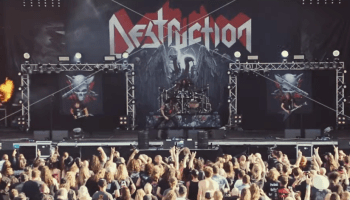
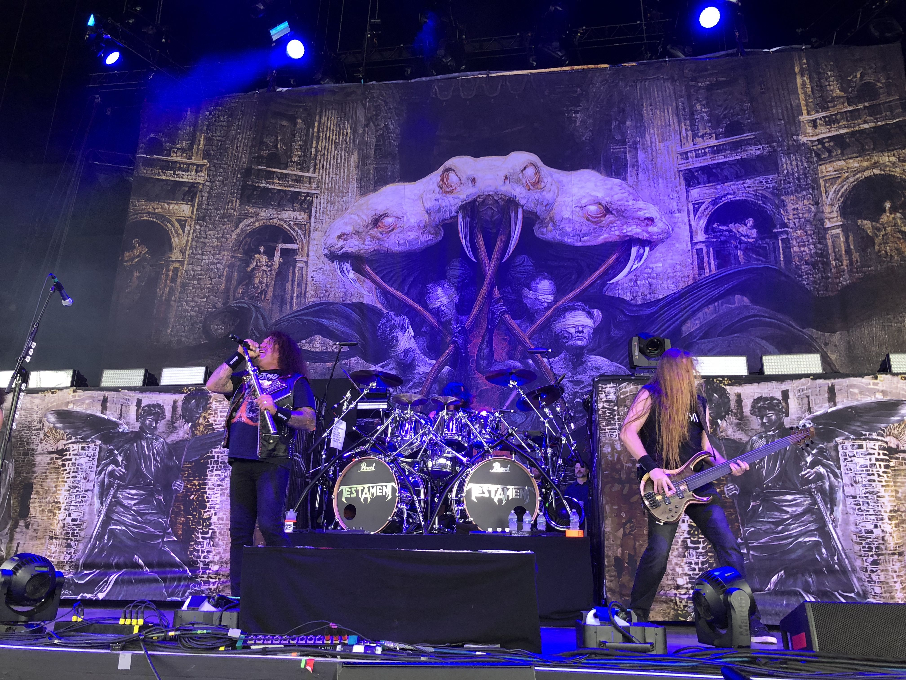
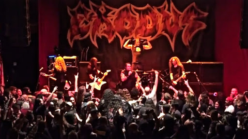
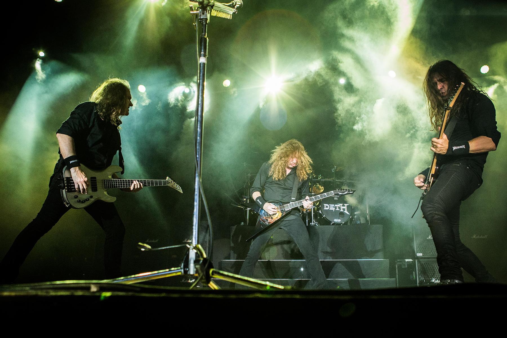
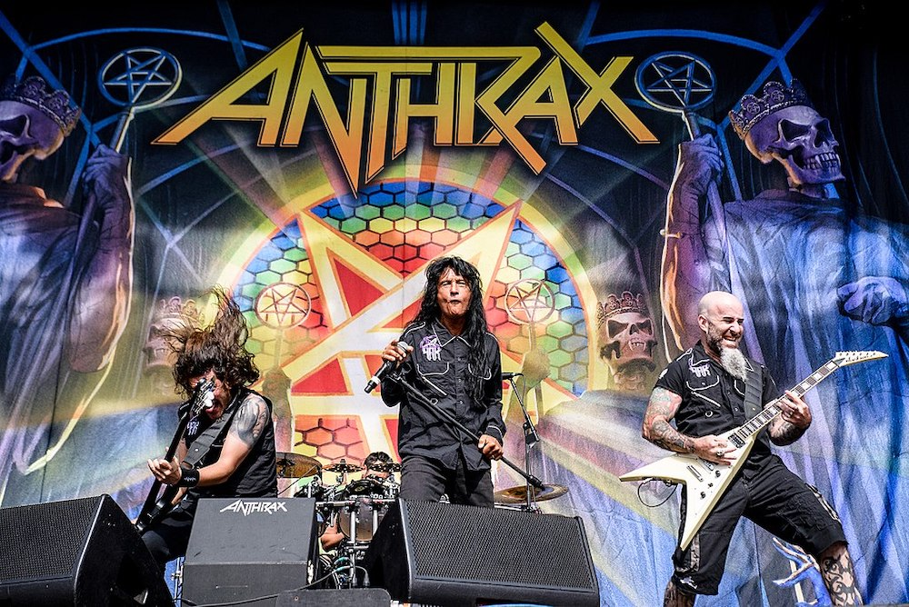
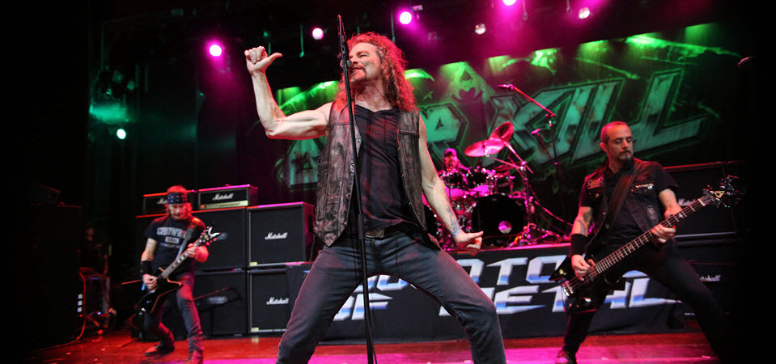
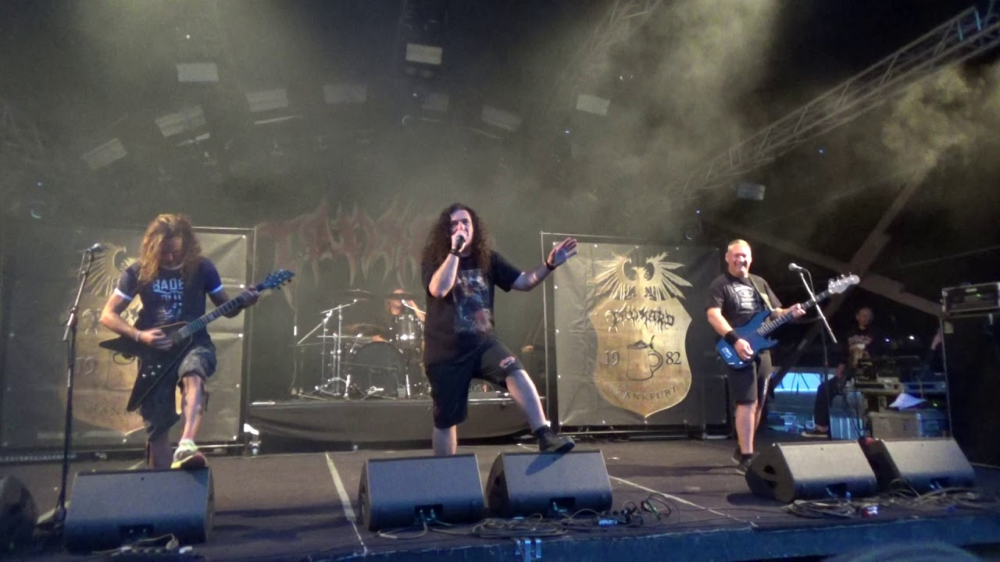

História do Thrash Metal:  Thrash metal é um subgênero do heavy metal caracterizado por seu ritmo rápido e agressividade. As canções usualmente têm batidas rápidas e riffs de guitarra que regem a música, intercalados com solos ao estilo shred. As letras normalmente tratam de problemas sociais e repudiam o rígido controle do Estado, usando linguagem forte e direta, similarmente ao que acontece no gênero hardcore. O gênero nasceu no início dos anos 1980, combinando o ritmo veloz da bateria e a atitude do hardcore punk com uso de pedal duplo, além de pesados e complexos estilos de guitarra influenciados pela New Wave of British Heavy Metal. Surgiu, parcialmente, como uma reação ao mais convencional e amplamente aceitável glam metal, que era um heavy metal mais leve com apelo pop, que emergia na mesma época. O thrash metal foi uma inspiração para futuros gêneros extremos como death metal e black metal. A banda Exciter foi um precursor de velocidade e thrash metal desde seu álbum de estreia, Heavy Metal Maniac, que foi lançado alguns meses antes do disco Kill 'Em All, do Metallica, considerado o precursor maior do estilo. Quatro bandas americanas, Anthrax, Megadeth, Metallica e Slayer, chamadas de Big Four do Thrash Metal, são creditadas como as quatro maiores e difundidoras do gênero, que também tem como importantes representantes os grupos Testament, Exodus, Kreator, Death Angel e Sepultura. A turnê Clash of the Titans (1990–1991), que contou com Megadeth, Slayer e Anthrax, é considerada como um momento importante na história do thrash, já que, após seu fim, viu o estilo entrar em declínio de popularidade no decorrer da década. O thrash metal ressurgiu nos tempos recentes, com muitas das bandas antigas retornando a suas raízes em seus novos lançamentos. Uma nova geração do thrash também surgiu em meados dos anos 2000, tendo inspiração lírica e visual dos grupos clássicos.  O Motörhead com os álbuns Overkill (1979) e Ace of Spades (1980) consolidaram a sonoridade speed metal unindo a batida do punk rock e a melodia Rock n' roll. Apesar de tal influência, o Motörhead não se rotula uma banda de thrash metal. No ano de 1981, o trio britânico Venom trouxe o disco Welcome to Hell, que mudaria a história do metal nos anos 1980 com seu som veloz, pesado e com letras obscuras, vindo a influenciar toda a cena do thrash. No ano seguinte lançaram seu segundo LP, Black Metal, concretizando ainda mais seu estilo. Alguns consideram o Venom como o real precursor tanto do thrash como do black metal (nome dado em homenagem a seu segundo disco). O termo "thrash metal" foi usado pela primeira vez numa edição da revista Kerrang! pelo jornalista Malcolm Dome enquanto fazia uma referência à canção "Metal Thrashing Mad" do Anthrax. A primeira demo de thrash metal pode ser considerada como sendo a intitulada Red Skies da banda Metal Church lançada no final de 1981. Esta foi uma demo instrumental que combinava elementos de thrash, speed, e power metal, e não teve grande circulação, tendo seu sucesso encoberto pela nova demo do Metal Church intitulada Four Hymns de outubro de 1982. Seus conterrâneos do Exodus lançariam sua primeira demo neste ano, mas já eram bem conhecidos na cena underground por seus shows. O Metallica foi a segunda banda norte-americana do estilo (com as demos Power metal de abril de 1982, No Life 'til Leather de julho de 1982 e a música "Hit the Lights" que estreou na coletânea Metal Massacre) e a primeira nos EUA a gravar um álbum (Kill 'Em All de julho de 1983). Em 1982 nascia na Alemanha o Destruction, o Tankard e o Sodom; este último traria a demo Witching Metal no mesmo ano, apesar de futuramente ficar conhecido como um lançamento de black metal (assim como o Venom). O Hellhammer, surgido na Suíça em 1982, gravou as influentes demos Death Fiend, Triumph of Death e Satanic Rites em 1983. Também em 1983, é lançada a primeira demo do Tormentor (Blitzkrieg), banda que trocaria seu nome para Kreator posteriormente. Essas bandas deram uma enorme contribuição para a consolidação do estilo não só na Europa, mas também no mundo.  A banda Anthrax grava sua primeira demo em 1983. No fim de 1983 a banda Slayer grava seu disco de estreia chamado Show No Mercy. O LP trazia um som rápido, agressivo, com frenéticos solos de guitarra promovidos pela dupla Jeff Hanneman e Kerry King, que levaria-os a serem co-creditados pelas fundações do gênero. Em novembro de 1983, a banda Artillery grava uma demo intitulada We Are the Dead, esta demo tinha bastante influência de Black Sabbath, resultando em um tipo de thrash metal não tão rápido mais bem trabalhado na parte das guitarras. O quarteto americano Overkill gravaria sua primeira demo nesta época, nomeada Power in Black; o Dark Angel gravou Gonna Burn; o Exodus gravou Die by His Hand; e o Death Angel gravou Heavy Metal Insanity. Em 1984, o Anthrax lança seu álbum de estreia, Fistful of Metal, o Venom anunciou seu terceiro LP, At War with Satan, e o Hellhammer divulgou seu EP Apocalyptic Raids antes de trocar o nome para Celtic Frost. Além disto, novas fitas demos surgiram no ano de 1984: Bestial Invasion of Hell do Destruction; End of the World do Tormentor (pré-Kreator); Victims of Death do Sodom; A Lesson in Violence do Exodus; Living Death do Living Death; Hell's on Its Knees do Dark Angel; Deeds of Darkness do Artillery; e Fire Away do Whiplash. O LP Ride the Lightning é divulgado pelo Metallica. Surgimento no Brasil: O heavy metal no Brasil teve o pioneirismo na banda Stress, de Belém do Pará com o lançamento independente do álbum Stress I, em 1982 (reeditado em CD pelo selo fluminense Dies Irae). É considerado um marco do metal brasileiro e foi o primeiro álbum de heavy metal a ser gravado na América Latina. Mas no thrash metal a pioneira é a banda Dorsal Atlântica, do Rio de Janeiro. O split álbum com o Metalmorphose, Ultimatum, de 1984 (também relançado pela Dies Irae), é talvez o primeiro álbum de speed metal brasileiro. Mas vale lembrar que bandas de hardcore como Ratos de Porão e Lobotomia, de São Paulo, já tinham colocado influências de thrash metal no seu som no começo da década de 80. O thrash metal no Brasil tinha basicamente três cenas, a de São Paulo (de bandas como Korzus, Anthares, Acid Storm e Vulcano), a do Rio de Janeiro (de bandas como Dorsal Atlântica, Azul Limão, Taurus, Metralion e Antitese) e a mais notória, a de Belo Horizonte (de bandas como Sepultura, Chakal, Mutilator, Overdose, Witchhammer, entre outras, e alavancada graças ao selo Cogumelo Records). Sem dúvida nenhuma, a banda brasileira de thrash metal de maior repercusão dentro e fora do Brasil foi o Sepultura. Inicialmente mais voltado para o lado mais obscuro do thrash metal (o que muitos chamavam de death ou black metal), logo com o lançamento de Schizophrenia em 1987 a banda despontou lá fora e levou a assinar com o selo europeu Roadrunner Records. Durante os anos 90 não houve muitos nomes no thrash, mas vale citar Zero Vision e Distraught, que praticavam um thrash metal um pouco mais moderno, como o praticado lá fora (Pantera, Machine Head, Hatebreed). Hoje os representantes do thrash (como uma nova geração do metal) são bandas como Prophecy, One of Them, Tramoia, Blasthrash, Violator, Nervosa, Woslom, Farscape, Toxic War, Bywar, Disgrace and Terror, Comando Nuclear, Selvageria, Exorcismo e Uganga. Popularização do estilo:  O thrash metal começou a se tornar popular em 1984, com o Slayer lançando o clássico EP Haunting the Chapel, que continha a música "Chemical Warfare", e os suíços do Celtic Frost que também trouxeram seu EP intitulado Morbid Tales. Estes lançamentos levaram o thrash metal a uma sonoridade mais sombria e pesada, que se refletiu no lançamento do álbum Bonded by Blood pelo Exodus, do álbum Hell Awaits pelo Slayer e pelo disco To Mega Therion pelo Celtic Frost. em 1985. Em 1985 a banda Megadeth, formada por Dave Mustaine ex-integrante do Metallica, lança seu álbum de estreia intitulado Killing Is My Business And Business Is Good!. O Megadeth combinava a sonoridade dos riffs de thrash metal com solos mais trabalhados e complexos como os do Judas Priest. Ainda em 1985, a banda Stormtroopers of Death, com integrantes do Anthrax, Nuclear Assault e M.O.D. lançam o LP "Speak English Or Die", combinando o Thrash Metal com punk. Sai o segundo disco do Anthrax, Spreading the Disease. Fora dos EUA, a banda alemã Kreator lança seu álbum de estreia intitulado Endless Pain (1985), o Destruction lança o álbum Infernal Overkill (1985) e o Sodom lança In the Sign of Evil (1984). A banda brasileira Sepultura lança seu EP Bestial Devastation. No Canadá, bandas como Exciter, em 1983 com álbum Heavy Metal Maniac, e Voivod em 1984 com o álbum War and Pain, marcaram presença no nascimento do Thrash, bem como a banda Eudoxis cujos integrantes costumavam se apresentar vestindo armaduras completas com espetos de metal e cujo bumbo da bateria era de aço inoxidável e possuía 1,8 metros de comprimento que lança em 1985 a demo Metal Fix. O ano de 1986 foi um marco para o thrash metal, com alguns dos álbuns mais influentes do estilo sendo lançados. A banda Dark Angel lançou o Darkness Descends, que foi pouco reconhecido na época, mas é considerado um dos mais pesados e rápidos álbuns de thrash metal.  Neste mesmo ano foram lançados os álbuns que estabeleceram novos limites para a brutalidade musical e que seriam algumas das principais influências para o estilo musical death metal, estes álbuns foram o Reign in Blood, do Slayer que é universalmente reconhecido como um clássico do estilo e o Pleasure to Kill da banda Kreator. O Megadeth lança o álbum Peace Sells But Who's Buying?, o Metallica lança o Master of Puppets, e o Nuclear Assault lança seu primeiro álbum, intitulado Game Over. A banda Hobbs Angel of Death surge na Austrália, tocando um tipo de thrash metal calcado nos moldes dos primeiros álbuns do Slayer, porém focado no mercado europeu. No Brasil, a banda Ratos de Porão lançava o seu álbum Descanse Em Paz, misturando o punk rock com o thrash metal, consolidando esse estilo com o álbum Brasil de 1989. Em 1987 o Anthrax lança o famoso álbum Among the Living. Enquanto que os álbuns anteriores da banda foram considerados como estereótipos da NWOBHM, este lançamento colocou a banda no terreno do thrash metal com guitarras rápidas e pesadas e um bom trabalho na bateria. A sonoridade do Anthrax sempre foi considerada mais melódica que a de outras bandas de thrash metal, talvez isto se deva em parte devido à sua grande influência do punk rock. Neste mesmo ano a banda de hardcore D.R.I., lança seu álbum Crossover, mesclando o hardcore com thrash metal. Em torno de 1988 o gênero estava ficando saturado com muitas bandas novas, mas alguns álbuns clássicos ainda seriam lançados. O quarto álbum do Sepultura, Beneath the Remains de 1989, lançado pela Roadrunner Records revelou a banda no cenário mundial. O Vio-lence, uma banda tardia da cena da Bay Area, lançou seu álbum de estreia intitulado Eternal Nightmare (1988), combinando riffs rápidos com um vocal influenciado diretamente pelo hardcore punk. Neste mesmo ano foi lançado pelo Metallica, o álbum And Justice for All no qual a banda lança seu primeiro videoclipe com a música "One". Em 1990 o Megadeth lança o álbum Rust in Peace, considerado pela crítica como o melhor álbum da banda e um dos últimos álbuns clássicos do thrash metal, juntamente com Cowboys From Hell da banda Pantera, e Seasons In The Abyss do Slayer. Outras influências:  Em meados dos anos 80 o thrash metal influenciou diretamente muitas bandas que seguiriam outros gêneros do metal, o Death, o Possessed e o Hellhammer (que mais tarde se tornaria o Celtic Frost), são alguns exemplos disso. O Possessed foi uma das primeiras bandas de death metal, lançando uma demo em 1984 com um thrash metal de sonoridade mais obscura. Esta sonoridade evoluíria para o que hoje chamamos death metal. Um dos melhores exemplos deste gênero é o clássico álbum da banda intitulado Seven Churches, de 1985. O álbum Energetic Disassembly (1985) da banda Watchtower quebrou barreiras em termos de técnica e influências de jazz na composição das músicas. Este tipo de trabalho continuou com bandas de thrash metal como Coroner e também com algumas bandas de death metal como Atheist e Cynic, bem como os futuros álbuns do Death. Algumas bandas combinavam o speed metal com o thrash metal, como por exemplo o Megadeth, e também as bandas Helstar, Testament, e Heathen, que ficaram conhecidas por seus complexos solos de guitarra. Evolução nos anos 90:  Nos anos 90 muitas bandas de thrash metal inovaram em relação à sonoridade como por exemplo a banda Iced Earth que lançou o álbum Night of the Stormrider (1992), combinando o power metal com o thrash metal. Muitas bandas, entretanto, optaram por uma sonoridade mais lenta iniciando um estilo chamado de groove metal, algumas bandas seguidoras deste estilo foram as bandas Machine Head e Exhorder que foram fortemente influenciadas pelo Pantera (banda). Este estilo influenciou muitas bandas através dos anos 90. Mesmo com o rock alternativo sendo o gênero predominante nos anos 90, o thrash metal conquistou certa influência e bandas como Overkill, Testament, Slayer, Forbidden e Megadeth continuaram lançando álbuns modernos de thrash metal, com uma melhor produção mas mantendo em seus riffs a sonoridade clássica do estilo. Alguns álbuns de destaque desta nova safra são o Divine Intervention do Slayer, o Youthanasia do Megadeth (que obteve grande sucesso comercial nos EUA) e o The Gathering do Testament, que contou com a presença do baterista Dave Lombardo. Características do estilo: A bateria usa-se rapidamente e geralmente bumbo duplo como no speed metal, utilizando a técnica do D-beat drum e Skank Beat drum. Os riffs geralmente usam palhetadas em tremolo. Os vocais variam muito de acordo com a banda, desde vocal limpo, rasgado (drive), agudos, roucos e até semi-gutural. As linhas de baixo são bem marcadas e constantes, acompanhando as viradas da bateria. A presença quase obrigatória de solos de guitarra. As letras, muitas vezes, induzem à ideia de "protesto" e de críticas sociais, também podendo falar sobre guerra, destruição e morte. Precursores: É de consenso geral que o thrash metal começou no início dos anos 80. O ano de 1981 é visto por alguns como um ano crítico para o gênero embora existam influências anteriores, por exemplo: A música "Stone Cold Crazy", do Queen de 1974, é possivelmente a primeira música passível de ser chamada de thrash metal nos moldes tradicionais do estilo. O riff de "Symptom of the Universe", música de Black Sabbath de 1975, é possivelmente um dos primeiros riffs que podem ser considerados thrash metal, outras músicas como "Into the Void" e "Children of the Grave" ambas de 1971 também tiveram influência no estilo. Os precursores do speed metal, Judas Priest apresentaram algumas ideias thrash no seu álbum Stained Class de 1978 incluindo o riff de "Saints in Hell" ou a estrutura geral de "White Heat, Red Hot". A versão ao vivo de "Tyrant" no álbum Unleashed in the East de 1979 é muito mais próxima do thrash metal do que a sua versão original de 1976 (presente no álbum Sad Wings of Destiny), combinando a velocidade do baterista Les Binks com uma maior distorção nas guitarras. O Motörhead, que seus membros definem simplesmente como uma banda de Rock'n'Roll, influenciou bastante o heavy metal e o punk rock. Desde o clássico álbum Overkill de 1979, seu som apresenta várias características do thrash metal: ritmo acelerado, guitarras e baixo distorcido, vocais roucos, letras debochadas. Foi uma influência direta para o Venom. Por exemplo. A banda The Misfits e seu álbum, Earth A.D./Wolfs Blood, serviram de inspiração para grandes bandas de Thrash Metal, como o Metallica. Além de ser Horror Punk, também é considerado Thrash Metal. Algumas bandas, como Metallica, tiveram um pouco (ou muita) influência desse álbum dos Misfits. A Banda alemã Accept também contribuiu para o surgimento do estilo com uma sonoridade um pouco mais soft. Algumas Bandas que Você deve conhecer: Formulario de pesquisa: O que você está achando sobre este site? Ajude-nos a melhorar CLIQUE AQUI Fonte: Data: 15/03/2021 – Segunda - feira Horário: 18:27:19 Criado e Desenvolvido por: Pedro Rammé Figueira